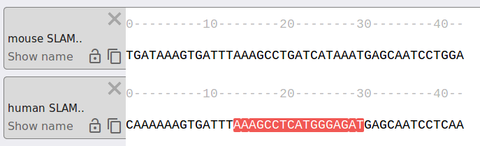
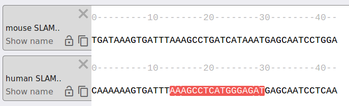
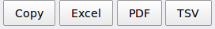

).
).
At the first step you need to add desired binding models from HOCOMOCO to the models list. To perform this step, start browsing models by typing TF name or family in the search field (). Next, click on a Motif ID () in the drop-down list. A new motif will appear below.
Note that chosen Motif ID contains a Hyperlink to the HOCOMOCO database ().
Click the Upload file () button or type/paste sequences to the respective form field, FASTA format is supported. The allowed alphabet is - {A, a, T, t, G, g, C, c, N, n}. Note that PWM score = 0 is assigned to {N, n} letters.
Click Submit sequences () to parse the sequences and create a separate Tab for each sequence in the list. Switch Rewrite button to “Yes” () if you want to clear all previously parsed sequences on submit, default mode adds more Tabs to already existing (if any).
If there are no parsing errors, multiple (one-per-sequence) new
Tabs
( )
will be created in the visualization field below. To check a name of a particular sequence you may click
Show name
().
As long as the list of chosen binding modes is not empty, the predicted binding sites will be visually
marked in the sequences.

)
will be created in the visualization field below. To check a name of a particular sequence you may click
Show name
().
As long as the list of chosen binding modes is not empty, the predicted binding sites will be visually
marked in the sequences.

To copy the markup click the Copy icon (). Note that Font size () and Color can be adjusted if necessary.
To compare several sequences at once you can switch mode to Multiple with the Mode () button. Use Lock (, ) to prevent a particular tab from horizontal scrolling. An important note: the table with the TFBS predictions at the bottom of the page includes predictions for ALL sequences.
To visualize binding sites in a single sequence you can switch mode to Single (). An important note: the generated table will contain sites only for the ACTIVE currently visible sequence.
Set desired motif P-value exactly or by dragging the slider. The value is shown in both linear and logarithmic scale and restricted to [ 1.00e-6, 5.00e-2 ] interval. Recommended permissive P-value = 0.0005 (approximately 1 expected prediction in a stretch of random 1000 nucleotides of double-stranded DNA). Check [HOCOMOCO v9] for details.
You may experience a minor slowdown when visualizing TFBS in longer sequences (100bp+).
Detailed data on detected binding sites are provided in the table at the bottom of the page. The population of the complete table is the most time-consuming operation. To maintain overall page responsiveness while tweaking settings the table can be switched off using Hide table button ().
The table has additional controls. Select columns () can be used to show additional data on predicted TFBS. Info button () unfolds additional information directly within the table.
The table contents can be saved using Export buttons (). The results can be filtered with the Search field (). An important note: According to the chosen Mode ( - Single, - Multiple) the table will contain different sites (either from all sequences or from the single active sequence visualized, details are given above in the Add sequences part of the guide).